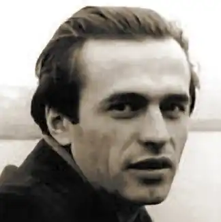
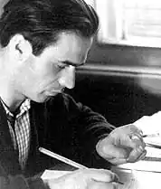
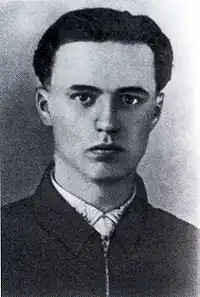
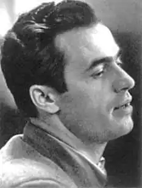
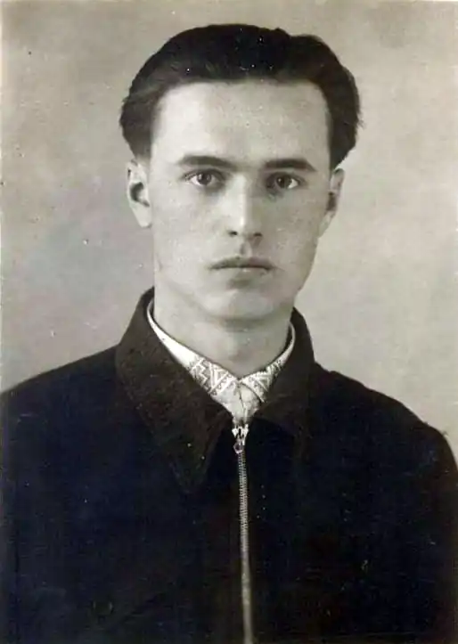
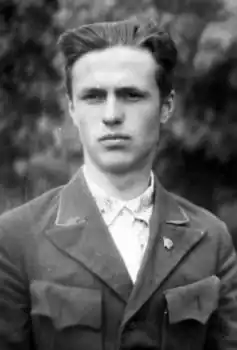

Василь Симоненко
1956 рік. Після знаменитого XX з'їзду КПРС, на якому тодішній більшовицький генсек Микита Хрущов вжахнув світ убивчо-викривальною доповіддю про нечувані злодіяння сталінської бандократії, здавалося б, на нашій вистражданій землі ніколи не повториться розгнуздана вакханалія багатомільйонного людомору. Та недарма в народі кажуть: із крокодилових яєць орли не вилітають. Як засвідчило життя, ніколи тоталітаризму не набути людського обличчя.
Не минуло й десяти літ після останнього цунамі сталінських репресій зими 1953 року, як над Україною знову замаячила лиховісна примара політичного терору. На той час на історичну арену ступило бунтівливе покоління шістдесятників, яке й стало об'єктом звірячої ненависті принишклих після критики культу особи сталіністів. Ще одебілений од необмеженої влади Хрущов лишався на всіх найвищих партійних і державних щаблях, а вчорашні сталінські круки зграями потайки зліталися під чорне крило Леоніда Брежнєва і затято гострили сокири для реваншистського терору. Першими мали злетіти голови розумників із "гнилої" інтелігенції, яка за природою своєю була непримиренним ворогом будь-якої тиранії. А найпершими серед перших повинні були розкришитися під обухом нового людомору черепи вільнодумних письменників. І коли розпочалася повзуча реставрація сталінщини, саме народні речники відкрили своїми лобами брами концтаборів і таємних кадебістських психушок. В Україні скорбний мартиролог брежнєвського терору судилося започаткувати не комусь іншому, як двадцятивосьмилітньому талановитому поетові, сурмачеві знедоленого покоління дітей війни Василеві Симоненку. Народився Василь Андрійович на другий день Різдвяних свят (8 січня) 1935 року в глухому поселенні Біївці Лубенського району на Полтавщині в сім'ї колгоспників. Дитинство його, за словами Олеся Гончара, чуло ридання матерів, що божеволіли від горя над фронтовими похоронками, воно брело за ними скородити повоєнні поля, тяжко добувати хліб насущний. Скупе на ласку було, мінами й снарядами бавилося його дитинство, коли від запізнілих вибухів десь біля степового вогнища ставали інвалідами діти — ці найбезвинніші жертви війни. Після закінчення 1952 року середньої школи Василь вступив на факультет журналістики Київського університету. Одержавши через п'ять років диплом "літописця сучасності", працював у редакціях газет "Молодь Черкащини", "Черкаська правда", "Робітнича газета". Проте змістом і сенсом його життя була поезія і тільки поезія. Про становлення поетів, як правило, пишуть: вірші складав ще на шкільній лаві, друкуватися почав у студентські літа. Цей стереотип абсолютно не підходить для Василя Симоненка. По-юначому щиро повіривши після XX з'їзду КПРС в торжество правди, свободи й демократії, він на повні груди вдихнув озон хрущовської "відлиги" і не ввійшов, а вітром-вітровінням увірвався в затхлу царину тодішнього красного письменства. Вже перші його поезії, що бурхонули на шпальти періодики, засвідчили: в українській літературі з'явився самобутній і зрілий Майстер. Як справедливо зазначала народжена хрущовською "відлигою" критика, Симоненко вразив читача не запаморочливими формалістичними новаціями, не вишуканим мереживом слів, а осяянням краси власної душі, справжністю почуттів, інтелектуальною високістю і молодечим завзяттям. Уже перша його збірка поезій "Тиша і грім" (1962) стала яскравим явищем не лише в тодішній зпекотілій літературі, а й у суспільному житті України. Такий творчий старт легко міг запаморочити молодого поета, збити його на соцреалістичні манівці. Як це, до речі, сталося з багатьма його ровесниками-віршописцями. Малообдаровані від природи, але жадібні до грошей і слави, вони наввипередки пробивалися у "вірні підручні партії", аби прицмулитися до номенклатурного корита, нахапати літературних премій, одержати депутатські мандати, всістися в редакторські крісла, стати бодай тимчасовими власниками державних автомашин і дач, безкоштовних закордонних вояжів. Симоненка нітрохи не манила вся ця мішура. Не з службового обов'язку, а за велінням серця Василеві боліли рани рідного народу, його злиденність, безправ'я, загроза національного виродження. Саме оприлюдненню цих пекучих проблем він і посвятив своє талановите перо, що, звичайно ж, не могло подобатися партноменклатурі. А ще більше не подобалася їй поетова непідкупність, його загострена соціальна чутливість, причетність до суспільно-політичного руху, породженого розвінчанням злочинів сталінізму неконформістським племенем шістдесятників. Як відомо, напровесні 1960 року в Києві з волі пробудженого хрущовською "відлигою" юнацтва був заснований Клуб творчої молоді. На суспільно-політичній арені на горе партократам з'явилася ініціативна й динамічна громадська інституція, яка ставила своєю метою об'єднати духовні й фізичні зусилля молодого покоління для розбудови оновленої України. Хоча на той час Симоненко жив і працював у Черкасах, проте разом з Аллою Горською й Іваном Драчем, Ліною Костенко й Іваном Світличним, Євгеном Сверстюком і Василем Стусом, Миколою Вінграновським і Михайлом Брайчевським він став душею і окрасою цього Клубу. Охоче роз'їжджав по Україні, як загальновизнаний поет брав участь у літературних вечорах і творчих дискусіях, виступав перед робітничою та сільською молоддю, прагнучи пробудити в душах ровесників національну самосвідомість і жагу до національного відродження. Проте просвітницька діяльність не задовольняла Василя. Від природи людина діла, він прагнув роботи з конкретними, зримими результатами. Такими результатами, які б унеможливили в майбутньому реставрації сталінщини на рідній землі. Скоро в Клубі творчої молоді для Василя знайшлася робота до душі. Тоді, коли він прилучився до комісії, котра мала перевірити чутки про масові розстріли в енкаведистських катівнях і відшукати місце потаємних поховань жертв сталінського терору. Разом з Аллою Горською вони обходили десятки прикиївських сіл, опитали сотні й сотні тамтешніх жителів, виявили урочища, де, за свідченням селян, більшовицькі кати ховали сліди своїх мерзенних злочинів, Саме за участю Симоненка на основі незаперечних речових доказів для людства були відкриті таємні братські могили жертв сталінізму на Лук'янівському і Васильківському кладовищах, у хащах Биківнянського лісу. За його участю тоді ж був написаний і відправлений до Київської міськради Меморандум із вимогою оприлюднити ці місця печалі й перетворити їх у національні Меморіали. Звичайно, керована "вірними ленінцями" Київська міськрада брутально зігнорувала заклик поета до морального очищення перед нагло убієнними. Проте цей вчинок Василя Симоненка слід вважати високим громадянським подвигом і водночас власноручним смертним вироком. Бо відтоді талановитий майстер слова опинився, за компартійною термінологією, "в сфері особливого зацікавлення відповідних державних органів". Щоправда, ще задовго до політичного краху великого "кукурузника" Хрущова Симоненко чітко і недвозначно усвідомив, що за обнадійливими "відлигами" не завжди настають жадані весни. Більше того, йому дедалі чіткіше вчувалося лиховісне потріскування грядущих суспільних морозів. Хіба ж не про повзучу реанімацію сталінізму свідчив бандитський розгін із застосуванням пожежних машин і водометів мирної сходки київської молоді біля пам'ятника Тарасу Шевченку в соту річницю прибуття з Петербурга домовини з прахом Кобзаря для перепоховання в українській землі? А що означало спішне видобуття сусловцями з ідеологічних прискринків пронафталіненого жупела українського буржуазного націоналізму? Чи як можна було розцінити свавілля цензури, яка в кожному правдивому слові поета чи газетяра вбачала "наклеп на прекрасну радянську дійсність" або "паплюження соціалістичних ідеалів"?.. Скорботною епітафією звучать слова, записані Симоненком до свого щоденника 3 вересня 1963 року: "Друзі мої принишкли, про них не чути й слова. Друковані органи стали ще бездарнішими й зухвалішими. "Літературна Україна" каструє мою статтю, "Україна" знущається над віршами. Кожен лакей робить, що йому заманеться... До цього ще можна додати, що в квітні були зняті мої вірші у "Зміні", зарізані в "Жовтні", потім надійшли гарбузи з "Дніпра" й "Вітчизни"… Скільки в цих рядках гіркоти й доконечного смутку! Щоправда, на той час Василь уже точно знав, що йому лишилося три чисниці до смерті. Знав давно, але, будучи людиною мужньою і трохи фаталістичною, не скаржився на долю. Єдине, що пекло йому душу, отруювало останні дні життя, то це — усвідомлення того, що примасковані вбивці, які прирекли його в могилу, залишаться верховодити на білому світі й будуть безкарно чинити свої чорні справи. Смерть двадцятивосьмирічного лицаря української поезії уже три десятиліття оповита ядучим туманом загадок, легенд, міщанських пліток. Ні, в правильності висновків патологоанатомів ніхто не сумнівається, а от що передувало тим висновкам... Не тільки в пору князювання "товариша" Щербицького в Україні, а навіть у роки горбачовської "перебудови" на цю тему було накладено якнайсуворіше табу. А суть ретельно охоронюваного секрету полягає в тому, що Василя Симоненка по-звірячому "обробили", а точніше — прибили охоронці громадського порядку в міліцейських мундирах. Сталося це влітку 1962 року. На залізничному вокзалі в Черкасах між буфетницею тамтешнього ресторану і Симоненком випадково спалахнула щонайбанальніша суперечка: за кільканадцять хвилин до обідньої перерви самоправна господиня прилавка відмовилася продати Василеві коробку цигарок. Той, звичайно, обурився. На шум-гам нагодилося двоє чергових міліціонерів і, ясна річ, зажадали в Симоненка документи. Не передбачаючи нічого лихого, Василь пред'явив редакційне посвідчення. Якби на місці Симоненка опинився будь-хто із черкащан, конфлікт на цьому, напевно б, і вичерпався. Але охоронці порядку, побачивши перед собою відомого поета, раптом ніби показилися. Замість того щоб допомогти йому залагодити перепалку з буфетницею і побажати щасливої путі-дороги, як це належало б нормальним людям, вони безцеремонне скрутили Василеві руки й на очах здивованого натовпу потягли силоміць до вокзальної кімнати міліції.